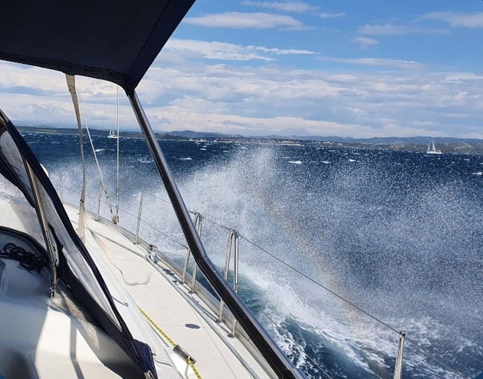
Hero alternatywne / emocja
wiatr.jpg · ruch i energia
Najlepszy kandydat na dynamiczny hero albo pierwszy panel po hero. Ma autentyczne napięcie rejsu.
Tweaks panel
Huashu proposal · asset placement
Po aktualnym czyszczeniu assetów najlepszy układ zmienia się: d.jpg lub wiatr.jpg niosą hero, g.jpg wzmacnia kajuty, a a.jpg zostaje niżej jako materiał promocyjny.
Logo
Menu + footerFavicon
z logo.pngDeploy
static/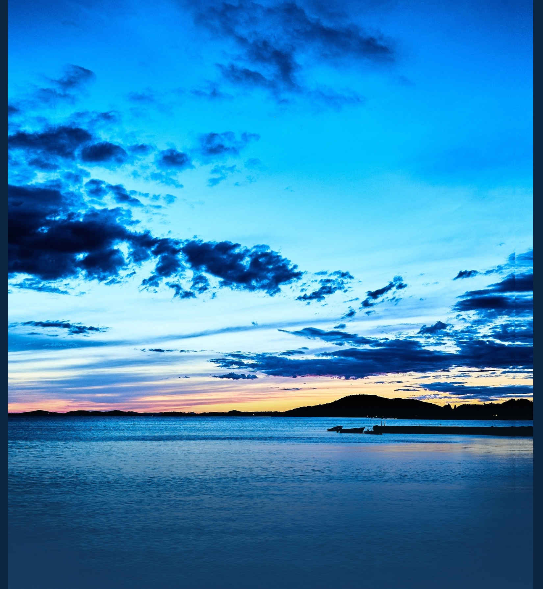
Wariant A
Najbliższy obecnemu premium landingowi. Hero opiera się na czystym kadrze morza, a zdjęcia z ludźmi i detalami wchodzą dopiero jako dowód doświadczenia.

Hero alternatywne / emocja
Najlepszy kandydat na dynamiczny hero albo pierwszy panel po hero. Ma autentyczne napięcie rejsu.
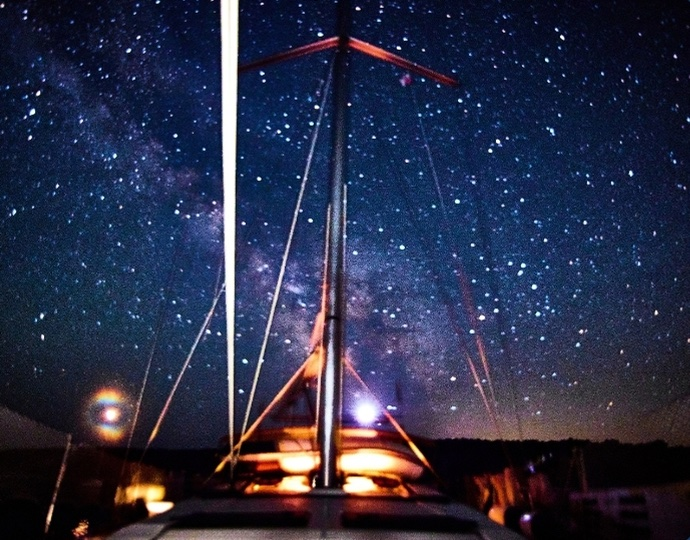
Atmosfera
Noc na pokładzie. Dobre do sekcji “dlaczego warto” albo closing CTA.
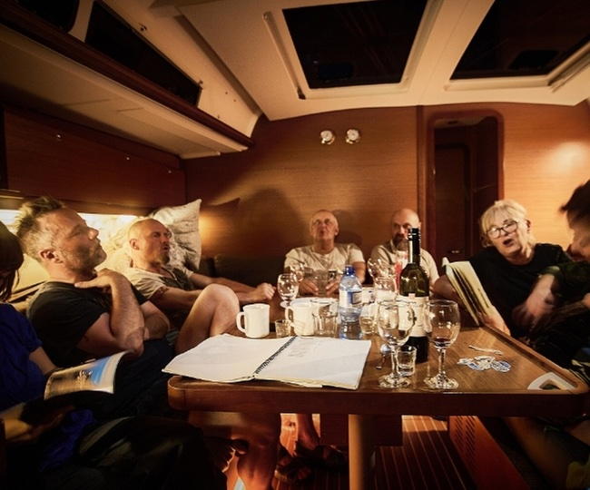
Załoga
Autentyczny społeczny proof. Lepszy w mniejszym panelu niż jako pełne hero.
Wariant B
Wariant galerii pokazuje ludzi, emocję i detale. Tu mogą wejść mniejsze, mniej ostre kadry, bo pracują jako dziennik wyprawy, nie jako hero.
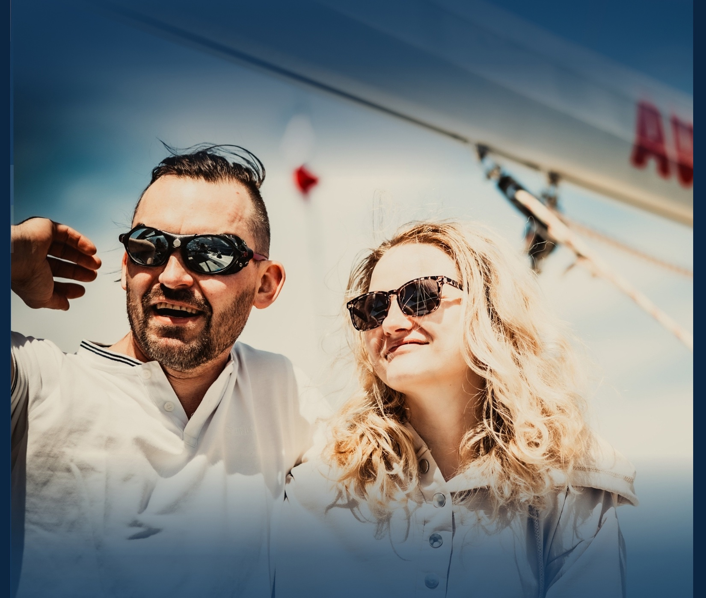
e.jpg · bardzo mocny kadr ludzki, dobry przy sekcji kontaktu i zaufania.
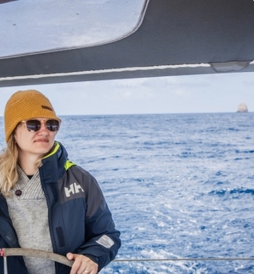
jola.jpg · portret pokładowy, dobry do testimonial lub “dla kogo”.
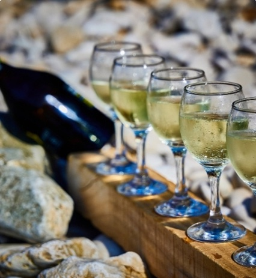
madera.jpg · lifestyle i portowy rytuał, używać jako mały detal premium.
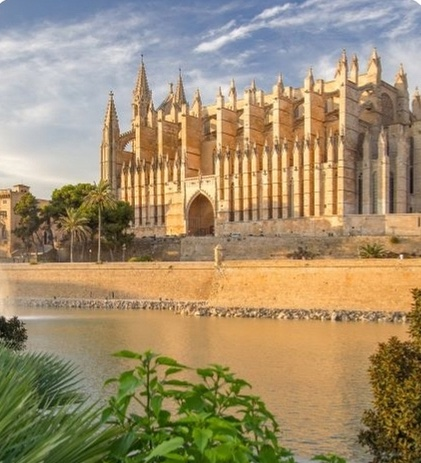
majorka.jpg · destynacja, karta etapu albo miniatura trasy.
Wariant C
Wariant pod rezerwację: plan jachtu i mapa wspierają decyzję, ale nie konkurują z wyborem koi, kwotą i kontaktem do Michała.
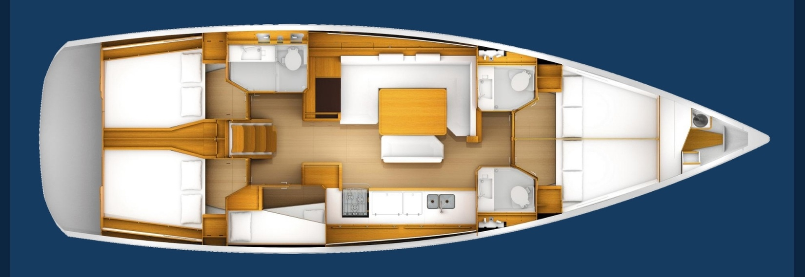
Kajuty / plan
Najbardziej funkcjonalny asset. Warto go połączyć z interaktywnym BoatPlan SVG.
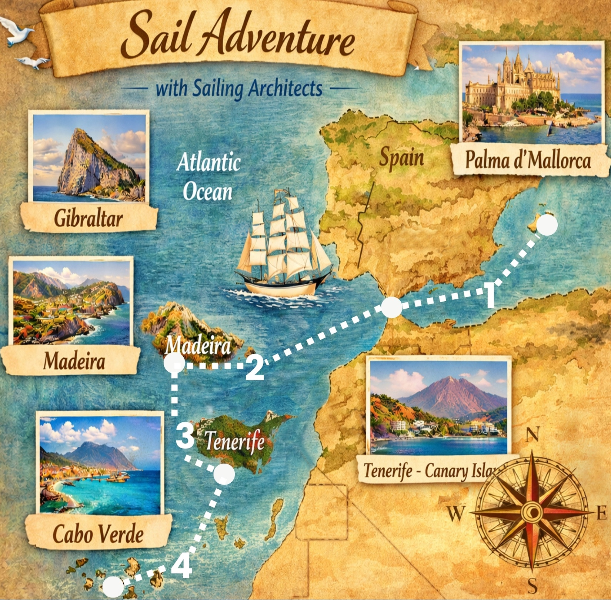
Mapa trasy
Dobra wizualna mapa wyprawy. Nie używać jako jedynego źródła cen.
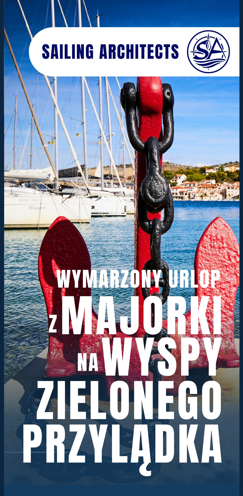
Promo poster
Ma wbudowany tekst, dlatego lepiej działa jako promocyjny proof niż hero.
a.jpg
Promo/social proof.
Nie hero premium, bo ma własną typografię.
d.jpg
Najlepsze czyste hero:
morze, horyzont, dużo powietrza.
e.jpg
Ludzki proof, dobry
przy sekcji kontaktu lub “załoga”.
g.jpg
Plan jachtu, najlepszy
do sekcji kajut i rezerwacji.
h.jpg
Mapa trasy, dobra jako
visual proof przy etapach.
wiatr.jpg
Najbardziej
dynamiczne hero alternatywne.
niebo.jpg
Closing CTA,
footer, nastrój nocnego rejsu.
salon.jpg
Życie załogi,
proof autentyczności.
jola.jpg
Portret pokładowy,
testimonial lub “dla kogo”.
majorka.jpg
Miniatura etapu:
start z Majorki.
madera.jpg
Lifestyle/detal,
mały akcent premium.
Rekomendacja
Na landing najlepszy jest Wariant A z hero na d.jpg albo wiatr.jpg, plus galeria załogi i detali z Wariantu B. a.jpg zostaje niżej jako materiał promocyjny.
Static paths
static/images/sailing/d.jpg jako główne herostatic/images/sailing/wiatr.jpg jako hero
alternatywne
static/images/sailing/a.jpg jako promo proofstatic/images/brand/logo.pngstatic/favicon.png lub wygenerowane
favicon.ico
Ryzyko
Logo ma granat i czerń. Na ciemnym tle wymaga jasnego pola, brass outline albo osobnej wersji monochromatycznej warm-white/brass.